像评审 PR 一样评审你的分支。把这些讨论交给你的 agent。
在任意 git 仓库中运行：在 diff 上留下行内评论，再通过内置 skill 把这些讨论交给你的 LLM，让它充当评审者或被评审者。评论就是 .reviews/ 下的纯 JSON — 无需剪贴板交接，agent 闭环也不需要任何服务器。
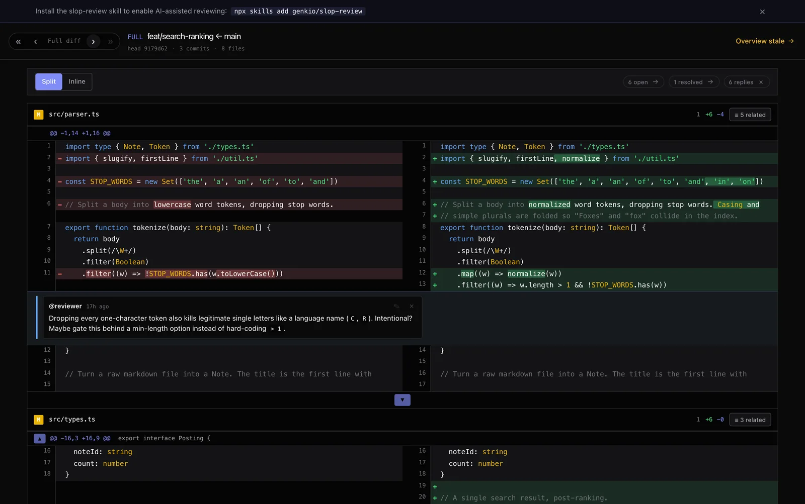
在浏览器里。或者直接在终端里。
同一套键盘驱动的评审界面，既可作为本地 web 应用运行，也可通过 Carbonyl 完整运行于你的终端 — 它是一个把画面绘制到 TTY 的 Chromium 分支。无需切换窗口，不会丢失上下文。几乎所有快捷键都能照常使用（两个修饰键组合改用了对终端更友好的替代方案）。
完整的图形界面，零配置
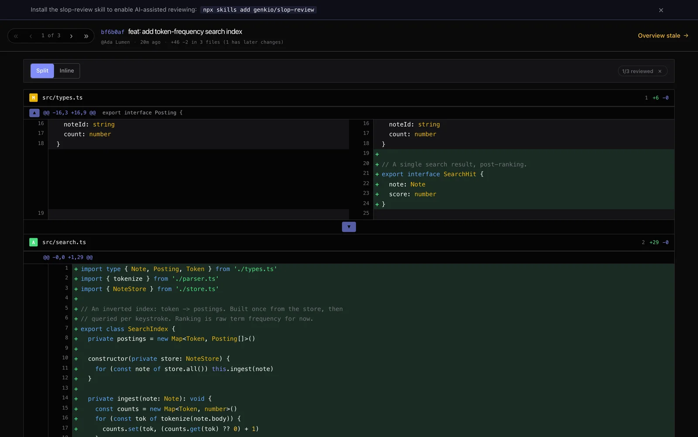
--carbonyl 让一切留在同一个窗格
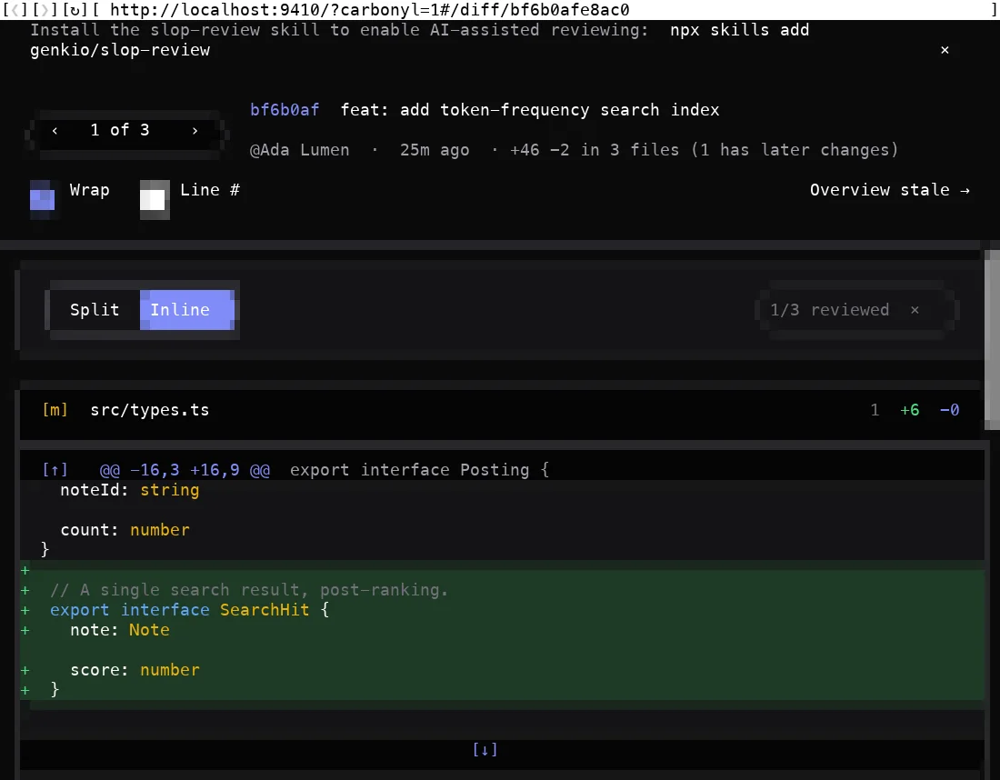
为评审闭环而生，不只是盯着 diff 看。
普通 diff 查看器做不到，而 slop-review 能做到的九件事。
先落在最关键的改动上。
每个 diff 都按文件对整组改动的核心程度排序，而非按字母顺序。你从最重要的代码开始，再逐步走向测试和文档。
- 被引用次数：有多少其他已改动的文件 import 了这个文件
- 其次是状态（modified 优先于 added，added 优先于 removed）
- 再是源码优先于辅助文件（tests、docs、fixtures、configs），最后是路径
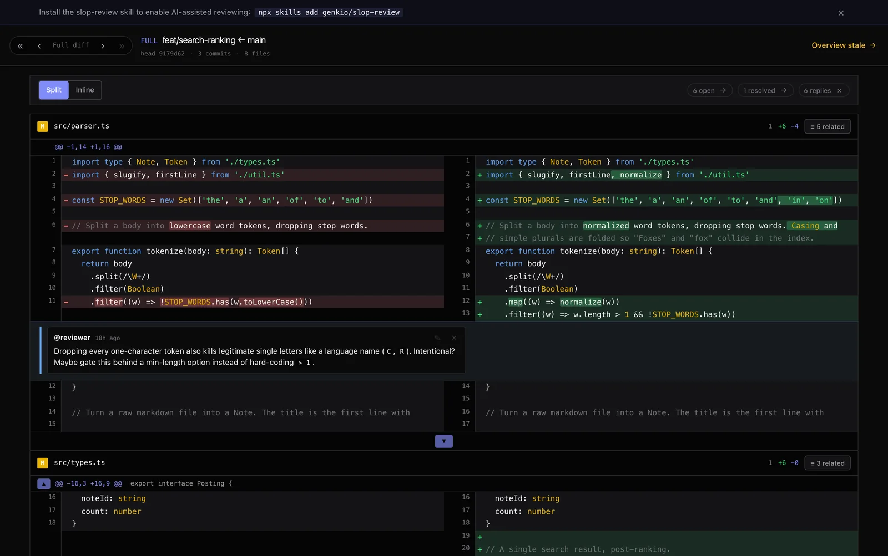
不离开主键位，完成整场评审。
单字母命令即可完成评论、复制、深链、窥视和删除，全程不离开键盘。which-key 提示栏在你第一次按键时出现，并在每次状态变化时重新渲染，只显示当前行可用的快捷键。
- 隐藏的提示是严格的空操作，因此提示栏绝不会宣传一个失效的按键
j/k移动，c评论，n下一条讨论，r标记已评审，p窥视 HEAD
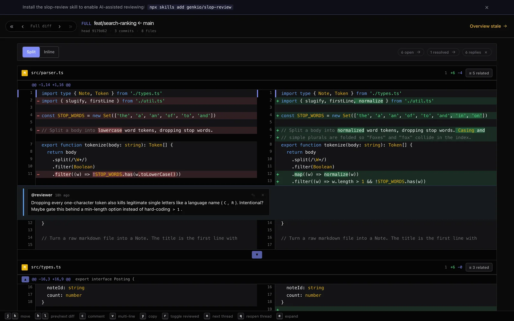
新侧或旧侧都能开行内讨论。
按 c 在光标所在行打开评论编辑器，或先按 v 选中一段范围。无论单行还是多行、新侧还是旧侧，讨论在三种 diff 模式下的表现完全一致。
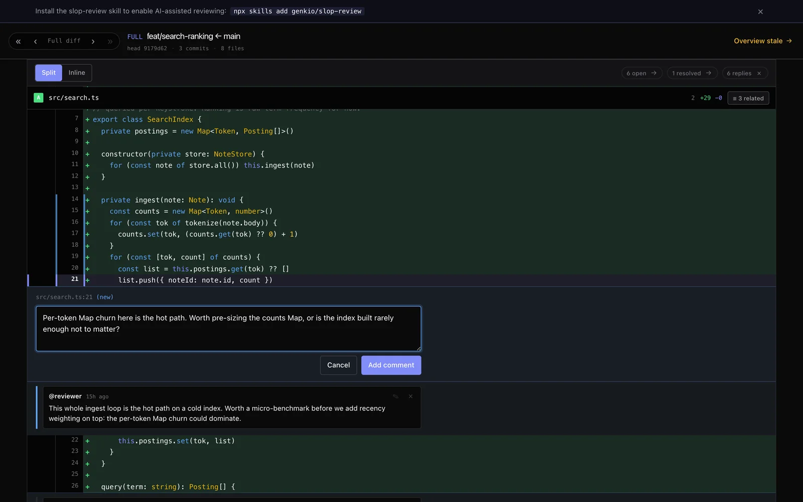
把这些讨论交给你的编码 agent。
内置的 Claude Code skill 让 agent 直接读写 .reviews/ 中的 JSON，从而充当评审者（留下行内评论）或被评审者（处理未结讨论、修改源码、回复）。无需 HTTP API，无需运行服务器。
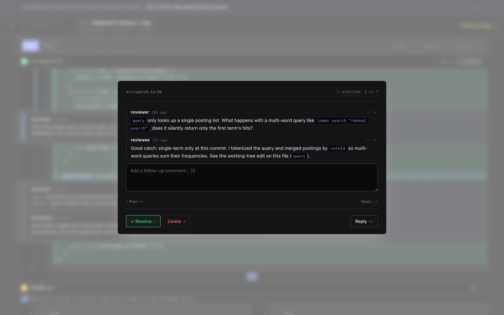
对某个文件签字确认。在它真正改动之前一直保持绿色。
点击文件头即可将其标记为已评审（并折叠）。该标记绑定到标记当时该文件的 blob SHA，因此之后只触及某一个文件的 push 只会使该文件的标记失效。所有未被触及的文件依然保持绿色。
- 逐 commit 的标记受“此后无更改”约束，因此你绝不会对自己没看过的内容签字确认
p在不离开 commit 视图的情况下窥视该文件在 HEAD 处的状态
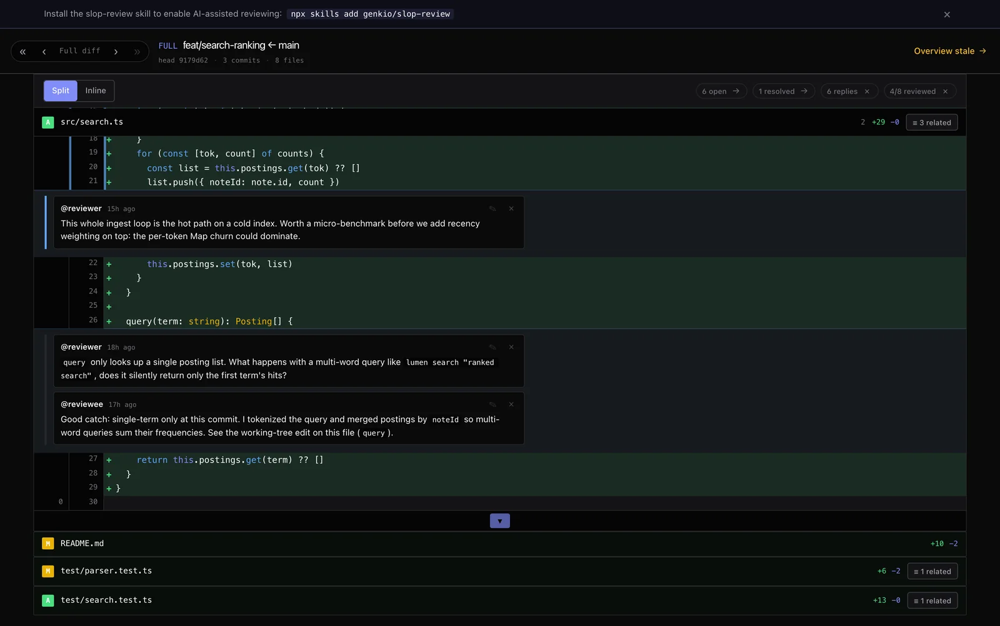
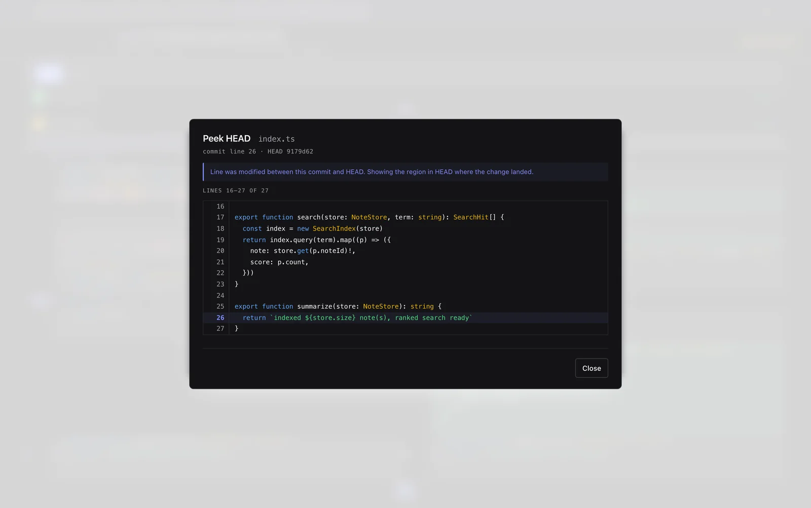
双击一个标识符，看到它的每一处出现。
双击 diff 中的任意标识符，即可列出它在所有已改动文件中的每一处出现，当前所在行就地高亮。打开第二个符号时，第一个会停靠到右侧边条，匹配列表和跳转历史都被保留，于是你可以在多个并行搜索之间切换而不丢失上下文。
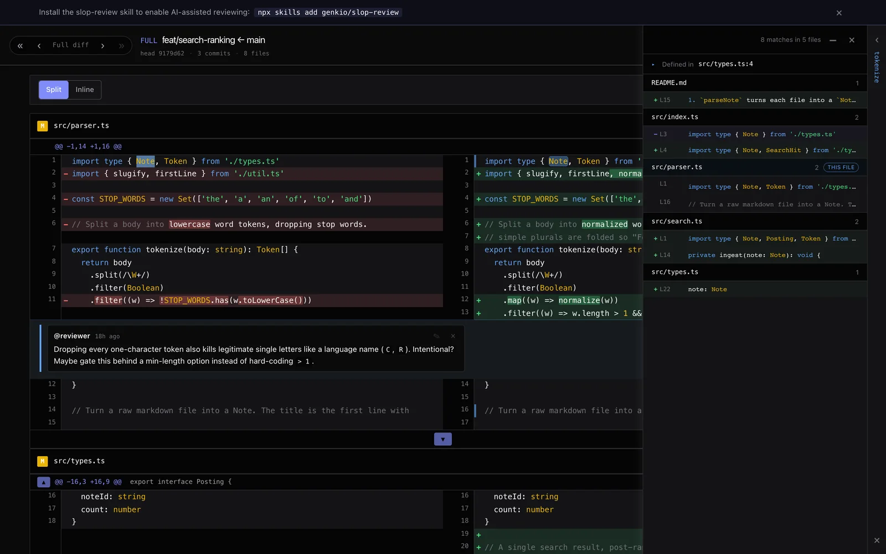
整个分支、任意 commit，或你的工作副本。
相对 base 的累积 diff、任意单个 commit，或本地工作副本的 diff。Shift+← / Shift+→ 在它们之间切换；评论在三种模式下都有效。冷启动会恢复该分支上次的视图，或回退到一个合理的逐 commit 默认值。
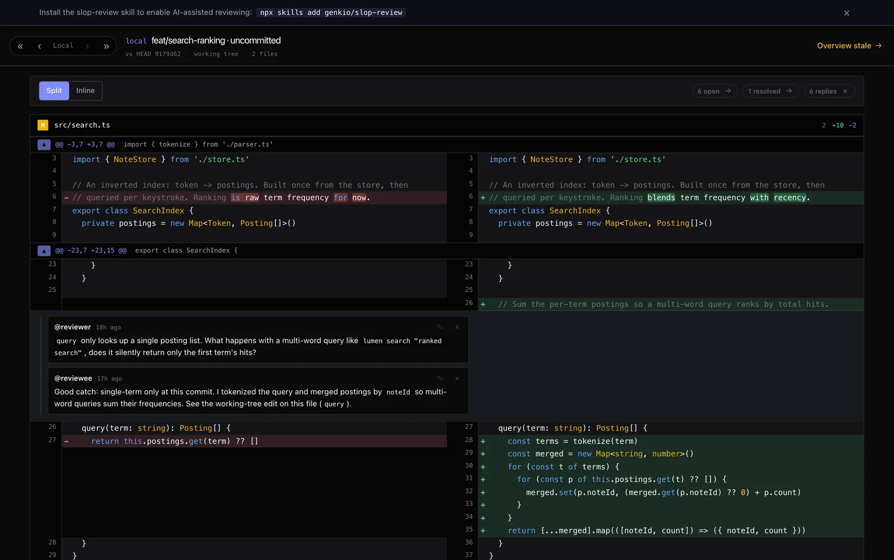
把未结的 PR 讨论拉到本地。
slop-review --sync 把你分支对应的 GitHub PR 中未结的评审讨论镜像到本地讨论，并保留各自的 GitHub 作者。再次运行会以 GitHub 为准：新回复流入，已解决的讨论在本地被删除，而你在本地动过的内容会被标记，以便你的编辑保持原样 — GitHub 的新回复仍会追加，但你的成果绝不会被覆盖。
- 同步而来的讨论带有 GitHub 徽章，并链接回原始评论
- 只要界面保持打开，每 5 分钟就会持续重新同步
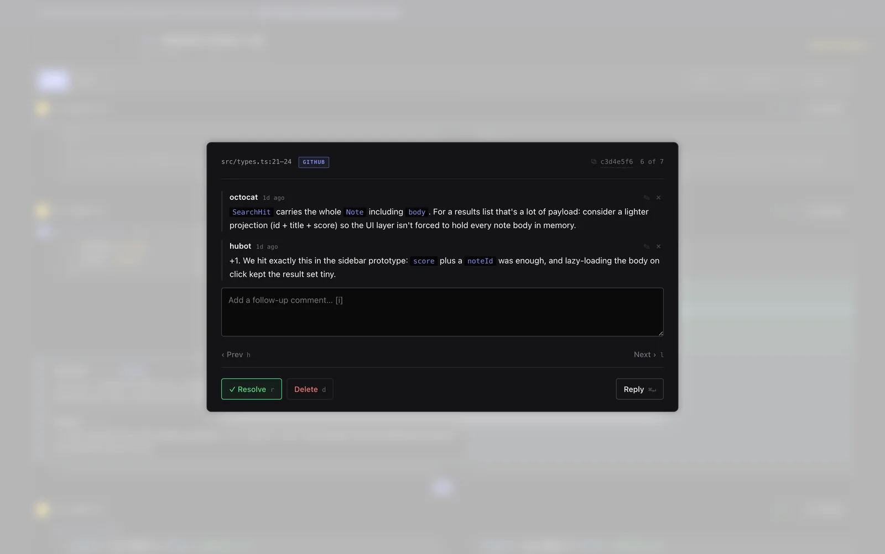
一张由 LLM 生成的改动地图。
Overview 模态框会通过 codex exec、claude 或 opencode run 运行内置的 explain-diff-html skill，生成包含背景、直觉说明、代码导读、必要图表和交互式测验的自包含说明。可多选生成器并行运行，再通过标题栏标签页比较结果；还可通过附加指令请求完整的多语言输出。也可以直接在终端用 slop-review --overview（-o）生成：在 shell 中选择生成器并填写附加指令，生成完成后应用会打开并直接浮现该概览。也可用 -a 指定生成器、-P 传入附加指令（slop-review -o -a opencode -P '同时使用英文和中文'），无需任何提示，便于写进脚本。
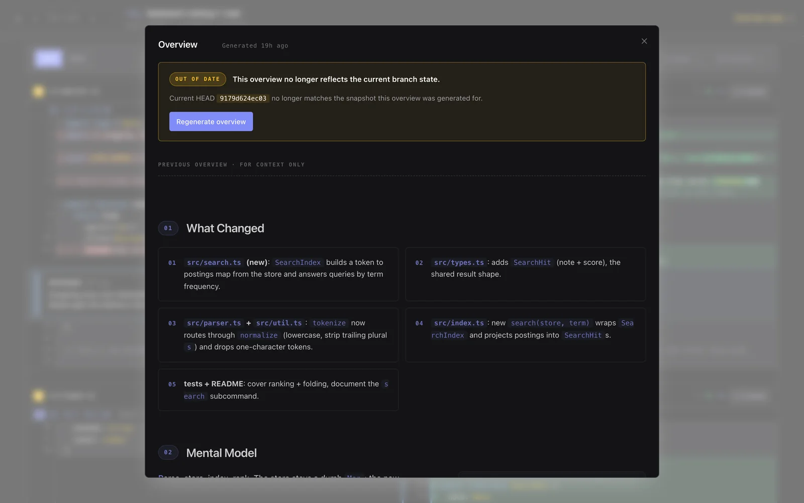
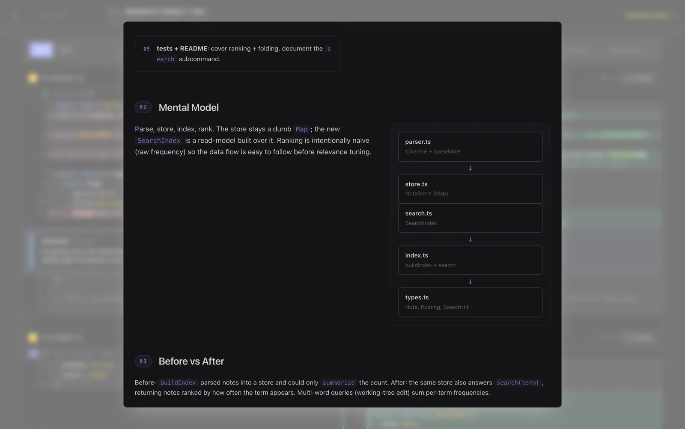
在手机上阅读体验出色。在终端里评审体验出色。
在小屏幕上 diff 会收起为单列以便阅读，而整个评审闭环（讨论、回复、;; 提交组合键）都能在 Carbonyl 内运行。
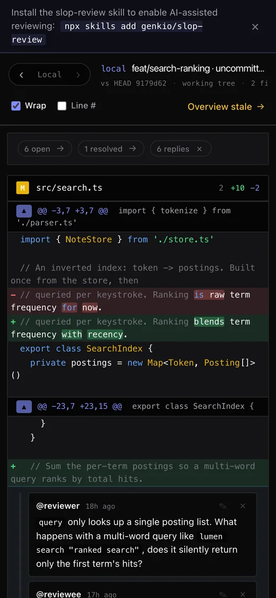
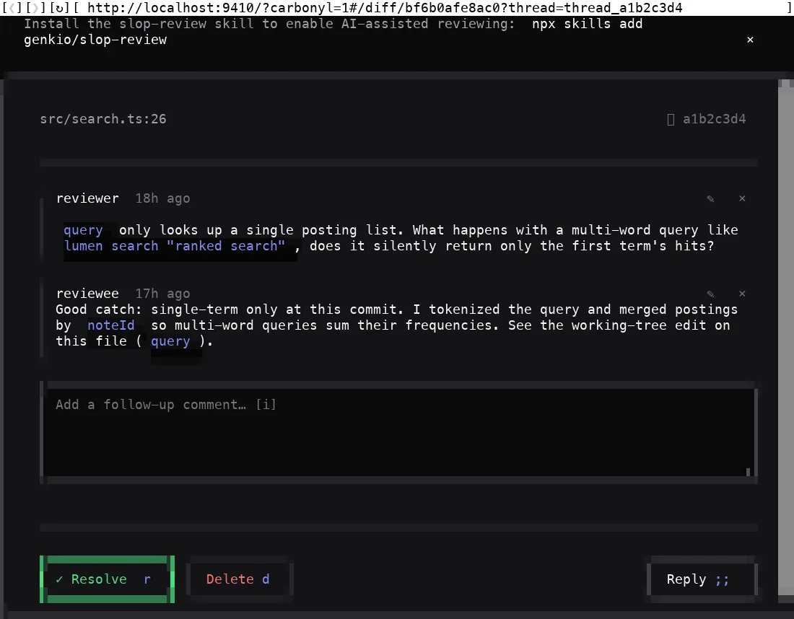
整个闭环，都在主键位上。
同一套快捷键在普通浏览器和 Carbonyl 中都能用。
| jk | 光标下移 / 上移一行（JK 移动五行） | carbonyl ✓ |
| cC | 在新侧 / 旧侧的行上评论 | ✓ |
| vV | 开始按行的可视选择 | ✓ |
| y | 复制光标所在行的 path:line 引用 | ✓ |
| r | 切换光标所在行所属文件的已评审状态 | ✓ |
| nN | 跳到视图中的下一条 / 上一条讨论 | ✓ |
| p | 窥视光标所在行的 HEAD 状态（commit 视图） | ✓ |
| e | 展开 hunk 周围的上下文行 | ✓ |
| ⌘/Ctrl↵ | 提交评论编辑器 | 用 ;; |
| ⇧←→ | 在 commit / 完整 / 本地之间切换 | 用 ‹ › |
在任意 git 仓库中，一条命令搞定。
当前工作目录会被自动初始化为评审目标，服务器挑选一个空闲端口，然后打开你的浏览器。讨论存放在 .reviews/ 中，把它加入 gitignore 即可让它们保持本地。
运行它
无需安装，无需配置。Node ≥ 20 且 PATH 中有 git。
终端模式
通过 Carbonyl 把界面直接渲染到你的 TTY。
教会你的 agent
安装内置 skill，让 LLM 可以充当评审者或被评审者。
同步一个 GitHub PR
把未结的 PR 讨论镜像到本地，然后打开界面。